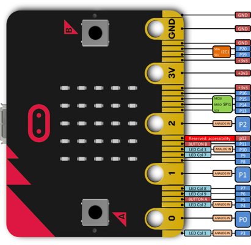
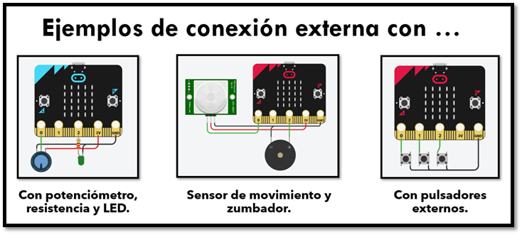

Teoría
¿Qué es un LED?
Los LEDs son dispositivos capaces de emitir luz cuando pasa una pequeña cantidad de corriente a través de ellos. El nombre LED se llama así porque toma su nombre debido a la expresión Light Emitting Diode, que significa diodo emisor de luz.
Debes saber que tienen polaridad, es decir debemos conectarlos de una determinada forma para que funcionen. Imagina una especie de puerta, que solo permite el paso de personas en una dirección, cuando estas se dan la vuelta para retroceder la puerta se cierra evitando que puedas regresar. Por tanto, si los conectamos de forma equivocada el LED no funcionará
Para no equivocarnos a la hora de conectar el LED, debes mirarlos detenidamente. Si los observas verás que tienen una patilla larga y otra más corta. La corta se corresponde con el lado negativo y deberá ir conectada a tierra. La patilla mas larga es el positivo y se conecta al pin de salida de nuestra micro:bit.
Los LED suelen necesitar una resistencia en serie con ellos que limitará la corriente que los atraviesa, ya que de no estar esa resistencia el LED se podría llegar a quemar.
Pines del Microbit
En el borde inferior del Micro:bit hay 25 tiras o pines dorados, llamados pines. Estos pines te permiten crear proyectos más creativos. Puedes crear circuitos, conectando elementos externos tales como timbres, zumbadores y motores y hacer tus propios proyectos divertidos.

Ejemplos de conexión
En la siguiente imagen se aprecia algunas conexiones externas del microbit con sensores o actuadores externos realizados mediante los pines del mismo.
